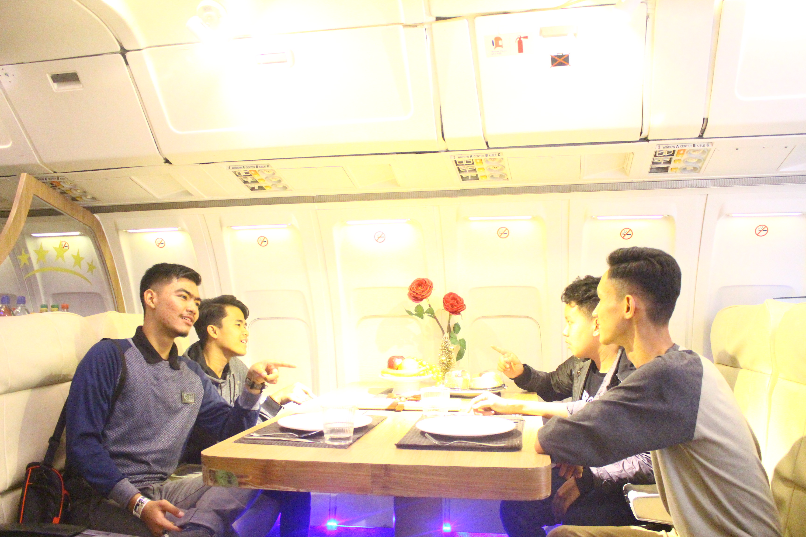
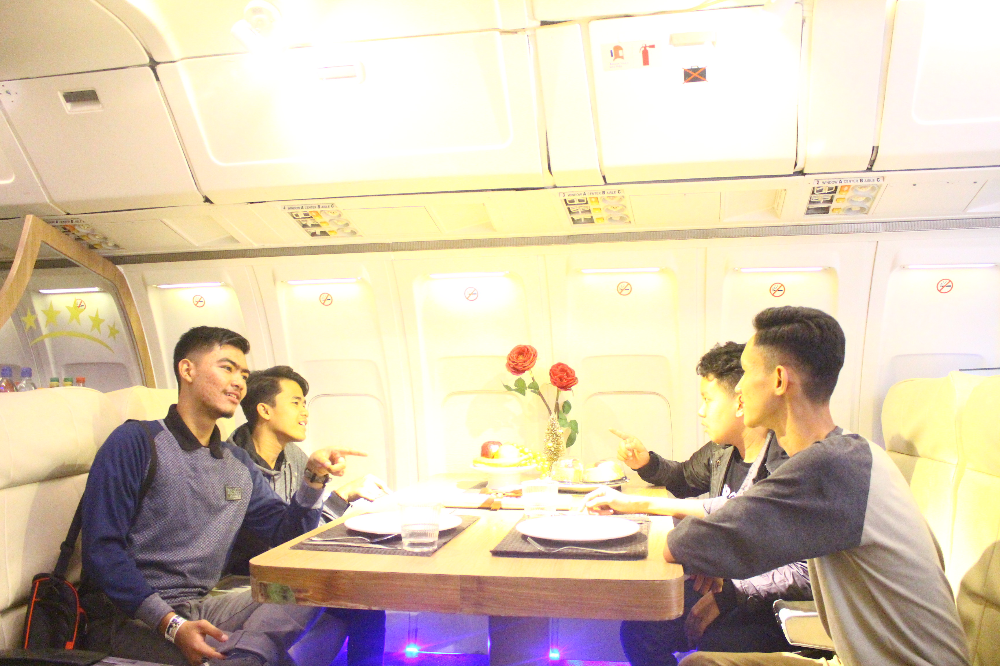

Give Me Some Saveral Question ?
Nama saya Fahmi Akbar Rahman, you can call me fahmi saya lahir 11 maret 1998. saya tidak pernah memiliki latar belakang
pemrograman
sewaktu saya masih bersekolah saya sudaj senang dalam dunia coding ini. dan di 1 tahun ini saya ingin
fokus untuk mempelajari dunia pemrograman dan Digital Marketing. tujuan saya
setelah menyelesaikan 1 tahun ini. tidak lain agar, sewaktu saya masuk dunia perkuliahan saya sudah mengerti basicnya bahkan bisa jadi sudah sampai intermediatenya ^_^...
dan hobby saya : sepak bola, berenang, dan tenis meja, berkuda, memanah DLL.
Suatu saat kami menulis surat perjanjian persahabatan di sobekan kertas yang dimasukkan ke dalam sebuah botol, kemudian botol tersebut dikubur dibawah pohon yang nantinya surat tersebut akan kami buka saat kami menerima hasil ujian kelulusan.Hari yang kami berempat tunggu akhirnya tiba, kamipun menerima hasil ujian dan hasilnya kita berempat lulus semua. Kami serentak langsung pergi berlari ke bawah pohon yang pernah kami datangi dan menggali tepat dimana botol yang dahulu dikubur berada. Kami berempat membuka botol tersebut dan membaca tulisan yang dulu pernah kami tulis. Kertas tersebut bertuliskan “Kami berjanji akan selalu bersama untuk selamanya.” Kessokan hari, aris berencana untuk merayakan kelulusan kami berempat. Malamnya kami ber 4 pergi bersama ke suatu tempat dan disitulah saat-saat yang tidak bisa aku lupakan karena aris berencana untuk menyatakan perasannya kepadaku. Akhirnya aku dan anis berpacaran. Begitu juga dengan andri, dia pun berpacaran dengan ana. Malam itu sungguh malam yang istimewa untuk kami berempat. Kami pun bergegas untuk pulang. Ketika perjalanan pulang, entah mengapa perasaan ku tidak enak. “Perasaanku ngga enak banget ya?” Ucapku penuh cemas. “Udahlah ndi, santai aja, kita ngga bakalan kenapa-kenapa” jawab andri dengan santai. Tidak lama setelah itu, hal yang dikhawatirkan nindi terjadi. “Arissss awasss! di depan ada juang!” Teriak nindi. “Aaaaaaaaaa!!!” Bruuukkk. Mobil yang kami kendarai masuk ke dalam jurang. Aku tak kuasa menahan air mata yang terus mengalir sampai aku tidak sadarkan diri. Perlahan aku buka mataku sedikit demi sedikit dan aku melihat ibu berada di sampingku. “Nindi.. kamu sudah sadar nak?” Tanya ibuku. “Ibu.. aku dimana? Dimana ana, andri, dan aris?” tanyaku. “Kamu di rumah sakit nak, kamu yang sabar ya, andri dan aris tidak tertolong di lokasi kecelakaan” Jawab ibu sambil menitihkan air mata. Aku terdiam mendengar ucapan ibu dan air mataku menetes, tangisku tiada henti mendengar pernyataan ibu. “Aris, mengapa kamu tinggalkan aku, padahal aku sayang banget ke kamu, aku cinta kamu, tapi kamu ninggalin aku begitu cepat, semua pergi ninggalin aku.” batinku berkata. 2 hari berlalu dan aku berkunjung ke makam mereka, aku berharap kami bisa menghabiskan waktu bersama sampai tua. Tetapi sekarang semua itu hanya angan-angan. Aku berjanji akan selalu mengenang kalian. Persahabatan Yang Indah Aku Virda, aku beruntung mempunyai sahabat yang selalu ada untukku, kami melewati suka duka bersama. Suatu ketika aku dan sahabatku bertengkar karena masalah yang kuanggap sepele, semua itu baru kusadari bahwa sahabatku sangat penting bagiku. Suatu hari aku pergi ke mall bersama sahabatku, aku menyuruhnya membawa belanjaanku, dan ternyata belanjaanku yang dibawanya tertinggal. Saat itu juga aku marahi dia dengan perkataan yang kasar karena keegoisanku. “Vir, tolong pegang belajaan ku ini ya, soalnya berat banget” Kataku. “Iya sini aku bantu bawa belanjaannya, takut kamu keberatan” Katanya. “Siap, kamu memang sahabatku yang paling pengertian” Jawabku. “Haha iyalah sesama sahabat memang seharusnya saling membantu” Jawabnya sambil tersenyum. Sembari berpelukan. “Kamu lapar ngga?” Tanyanya